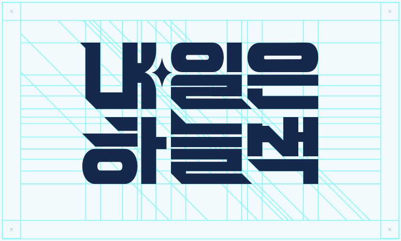
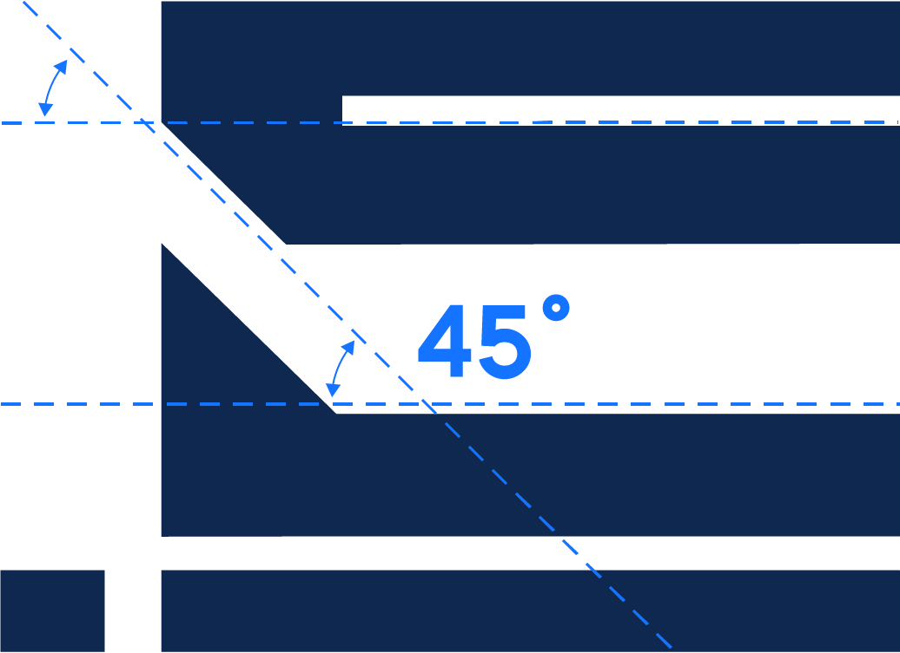
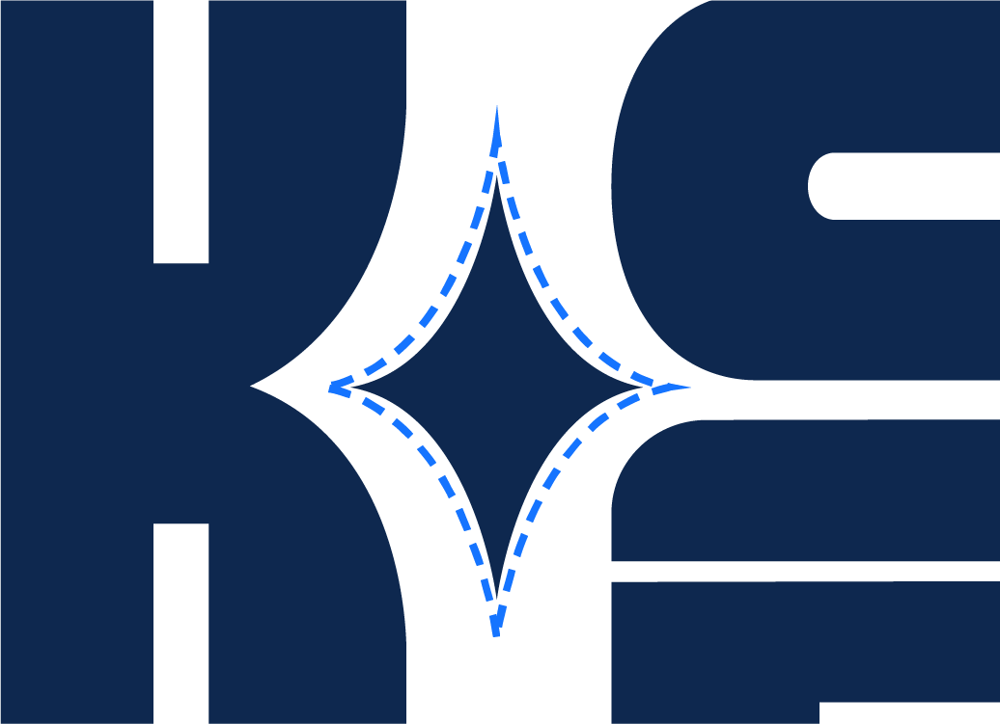

T-01
Slogan & Typography
내 일을 위한 선택, 내일을 위한 길
‘내일은 하늘색’은 지원자 한 사람의 ‘내 일’과 그가 맞이할 ‘내일’을 한 문장에 겹친 슬로건입니다. 장교와 부사관, 병, 저마다 다른 길을 걷지만 결국 같은 하늘 아래에 있다는 메시지를 전하기 위해, 다섯 글자를 굵고 단단한 고딕 골격과 하나의 그리드 위에 세웠습니다. 포스터 한 장부터 버스 랩핑까지, 어떤 크기와 매체에 놓여도 흔들리지 않는 하나의 목소리가 되도록.


45°, 이륙의 각도
활주로를 박차고 오르는 전투기의 상승 궤적을 45°로 추상화했습니다. 획을 자른 단면과 끝맺음이 모두 같은 각도로 기울어 있어, 글자를 읽는 시선도 자연스럽게 오른쪽 위로 날아오릅니다. 이 각도는 포스터의 사선 구도와 그래픽 라인으로 그대로 이어져 캠페인 전체의 방향이 됩니다.

‘내’와 ‘일’ 사이의 별
‘내’와 ‘일’ 사이에 작은 플레어를 띄워 한 단어가 ‘내 일’로도, ‘내일’로도 읽히게 했습니다. 밤하늘에서 길을 알려 주는 별처럼, 지금 고른 직무가 앞으로의 미래로 이어진다는 약속을 가장 작은 기호에 담았습니다.